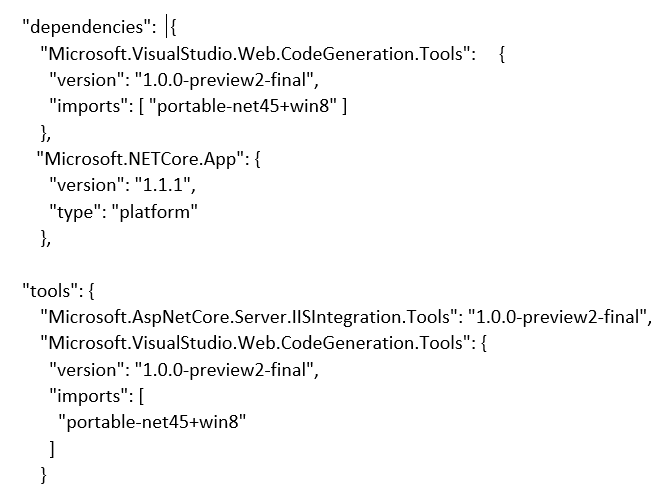

Set up ASP.NET 5/Core.
ASP.NET Core is the latest version of the .NET framework. I was working from visual studio 2015, which did not have the automatic set up for a Core project. This meant that when I started up a Core project it would not compile straight away. I also had to install additional libraries to my computer as my version of visual studio did not include Core by default.
The first notable challenge was installing Core and the Core tools required to set up a Core project in visual studio. At the time of install I was running Visual Studio 2015 Community Edition. I installed the Windows (x64) Core.exe, and the Visual Studio 2015 Tools that are required to make a Core application. However I found that after installing both of them, I still had no options to create a Core project. I tried the usual things, such as restarting the computer and checking that everything was installed correctly, to no avail. I began searching the internet for a solution to this problem. I eventually found a few suggestions that Core does not work well with the 2015 Community Edition, so I decided to upgrade. I considered moving to Visual Studio 2017 Enterprise, but that would conflict with what we used in other classes, so I decided to use 2015 Professional. Once I had that installed and running, I re-ran the Core installer and VS 2015 tools. This time I had the option of creating a Core project, so I had solved my first challenge.
The second challenge with Core was that once I could create a Core project, I was unable to build it. To solve this issue, I went to the Core documentation and started looking through the trouble shooting section. I was unable to find a solution there. The documentation was mostly geared towards VS 2017. I started looking further abroad, and found that even once Core had been installed I still had to add the dependencies and tools to the project. Fortunately, our project leader had found what dependencies were required. I found that trying to add them through Nuget did not work, so I had to manually type them into dependencies, and let Visual Studio update the project. I also had to add Core tools to the project to build it.
Upgrade version of Visual Studio to run Core. Install Core.exe and Visual Studio Tools. Add dependencies and tools manually.
I learnt a lot about Nuget and dependencies. I now know how to add a library via Nuget, choose a version, and update if necessary. I can manually add dependencies for a Core app using the project.json file. This means if the app is opened on another machine, it will automatically add those dependencies.
I have also learnt the newer isn’t always better, especially straight after release. Visual Studio 2015 was unable to set Core up automatically, which meant a lot of manual work was required This is not a problem in Visual Studio 2017.
Website to download Core installer and VS 2015 Tools: https://www.microsoft.com/net/download/core
My Core_API app in the master branch of the repo.